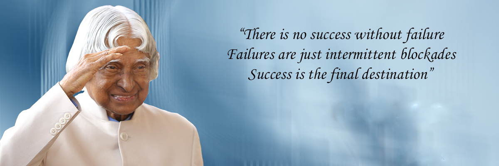

A. P. J. Abdul Kalam
Engineer, Scientist, President (India)

Here's a timeline of Dr. Abdul kalam
- 1931 - Born in Rameswarm, Madras, British India
- 1954 - Kalam completed his graduation in physics from University of Madras
- 1955 -He moved to Madras to study aerospace engineering Madras Instutute of Technology. While Kalam was working on a senior class project, the Dean was with his lack of progress and threatened to revoke his scholarship unless the project was finished within the next three days. Kalam met the deadline, impressing the Dean, who later said to him, "I was putting you under stress and asking you to meet a difficult deadline"
- 1960 - Kalam graduate from Madras Institute of Tech.He joined the Aeronautical Development Establishment of the Defence Research and Development Organisation (DRDO) as a scientist. He started his career by designing a small hovercraft, but remained unconvinced by his choice of a job at DRDO
- 1969 - Kalam was transferred to the Indian Space Research Organisation (ISRO) where he was the project director of India's first Satellite Launch Vehicle (SLV-III) which successfully deployed the Rohini satellite in near-earth orbit in July 1980
- 1970 -Kalam also directed two projects, Project Devil and Project Valiant, which sought to develop ballistic missiles from the technology of the sucessful SLV programme.
- 1980 -His research and educational leadership brought him great laurels and prestige, which prompted the government to initiate an advanced missile programme under his directorship.
- 1992-1999 -Kalam served as the Chief Scientific Adviser to the Prime Minister and the Secretary of the Defence Research and Development Organisation
- 2002-2007 -Kalam served as the 11th President of India, succeeding K. R. Narayanan. He won the 2002 presidential election with an electoral vote of 922,884, surpassing the 107,366 votes won by Lakshmi Sahgal.
- 2011 - Kalam was criticised by civil groups over his stand on the Koodankulam Nuclear Power Plant; he supported the establishment of the nuclear power plant and was accused of not speaking with the local people.
- 2012 - Kalam launched a programme for the youth of India called the What Can I Give Movement, with a central theme of defeating corruption
- 2015 -Kalam travelled to Shillong to deliver a lecture on "Creating a Livable Planet Earth" at the Indian Institute of Management Shillong. While climbing a flight of stairs, he experienced some discomfort, but was able to enter the auditorium after a brief rest. At around 6:35 p.m. IST, only five minutes into his lecture, he collapsed. He was rushed to the nearby Bethany Hospital in a critical condition; upon arrival, he lacked a pulse or any other signs of life
Some of his inspirational Quotes
"You have to dream before your dreams come true"
"Man needs his difficulties because they are necessary to enjoy success"
"Great dreams of great dreamers are always transcended"
Books written by Dr. Abdul kalam
- Developments in Fluid Mechanics and Space Technology
- India 2020: A Vision for the New Millennium
- Wings of Fire: An Autobiography
- Ignited Minds: Unleashing the Power Within India
- The Luminous Sparks
- Mission India
- Inspiring Thoughts
- Indomitable Spirit
- Envisioning an Empowered Nation
- You Are Born To Blossom: Take My Journey Beyond
- Turning Points: A journey through challenges
- Target 3 Billion
- My Journey: Transforming Dreams into Actions
- A Manifesto for Change: A Sequel to India 2020
- Forge your Future: Candid, Forthright, Inspiring
- Reignited: Scientific Pathways to a Brighter Future
- Transcendence: My Spiritual Experiences with Pramukh Swamiji
- Advantage India: From Challenge to Opportunity
If you are interested, you should read more about this missile man on his Wikipedia entry.